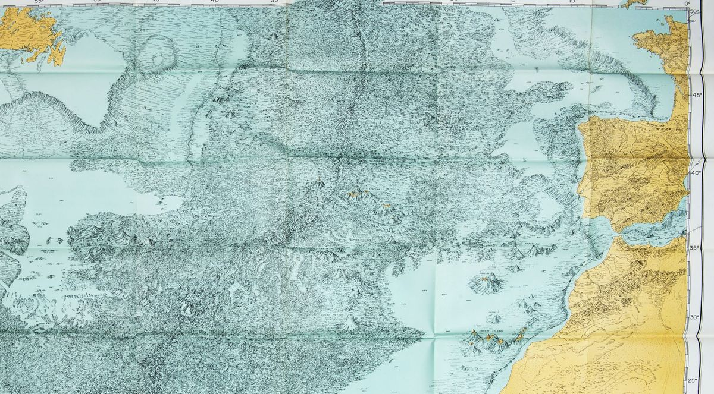

Frente al escepticismo, la evidencia.
Con miles de sondeos de sonar, Marie Tharp dibujó el primer mapa del fondo del Atlántico y descubrió el valle de la dorsal mesoatlántica. La recibieron con escepticismo; los datos le dieron la razón. Tharp lleva su nombre.
